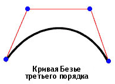
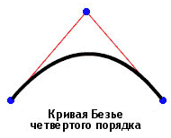

| Пакет | flash.display |
| Класс | public final class Graphics |
| Наследование | Graphics |
| Язык версии: | ActionScript 3.0 |
| Версии среды выполнения: | AIR 1.0, Flash Player 9, Flash Lite 4 |
graphics, являющееся объектом Graphics. Далее перечислены вспомогательные функции, обеспечивающие простоту использования: drawRect(), drawRoundRect(), drawCircle() и drawEllipse().
Нельзя создать объект Graphics непосредственно из кода ActionScript. Можно вызвать функцию new Graphics() для создания исключения.
Класс Graphics является конечным, его нельзя разбить на подклассы.
 Скрыть унаследованные общедоступные свойства
Скрыть унаследованные общедоступные свойства Показать унаследованные общедоступные свойства
Показать унаследованные общедоступные свойства| Метод | Определено | ||
|---|---|---|---|
beginBitmapFill(bitmap:BitmapData, matrix:Matrix = null, repeat:Boolean = true, smooth:Boolean = false):void
Заполняет область рисунка растровым изображением. | Graphics | ||
Задает простую заливку сплошным цветом для использования при последующих вызовах других методов объекта Graphics (например, lineTo() или drawCircle()) при рисовании. | Graphics | ||
beginGradientFill(type:String, colors:Array, alphas:Array, ratios:Array, matrix:Matrix = null, spreadMethod:String = "pad", interpolationMethod:String = "rgb", focalPointRatio:Number = 0):void
Задает заливку градиентом для использования при последующих вызовах других методов Graphics (например, lineTo() или drawCircle()) объекта. | Graphics | ||
Задает затенение для использования при последующих вызовах других методов объекта Graphics (например, lineTo() или drawCircle()). | Graphics | ||
Удаляет графику, отрисованную в данном объекте «Graphics», и сбрасывает параметры заливки и стиля линии. | Graphics | ||
Копирует все команды рисования исходного объекта Graphics в вызывающий объект Graphics. | Graphics | ||
cubicCurveTo(controlX1:Number, controlY1:Number, controlX2:Number, controlY2:Number, anchorX:Number, anchorY:Number):void
Рисование кубической кривой Безье из текущего положения рисования до указанной точки привязки. | Graphics | ||
Рисует кривую Безье второго порядка с использованием текущего стиля линии от текущего положения рисования до точки с координатами (anchorX, anchorY) и с применением опорной точки с координатами (controlX, controlY). | Graphics | ||
Рисует круг. | Graphics | ||
Рисует эллипс. | Graphics | ||
Отправляет последовательность экземпляров IGraphicsData для рисования. | Graphics | ||
Отправляет последовательность команд для рисования. | Graphics | ||
Рисует прямоугольник. | Graphics | ||
drawRoundRect(x:Number, y:Number, width:Number, height:Number, ellipseWidth:Number, ellipseHeight:Number = NaN):void
Рисует прямоугольный примитив со скругленными углами. | Graphics | ||
drawTriangles(vertices:Vector.<Number>, indices:Vector.<int> = null, uvtData:Vector.<Number> = null, culling:String = "none"):void
Визуализирует набор треугольников, чтобы придать растровому изображению трехмерный вид. | Graphics | ||
Применяет заливку к линиям и кривым, добавленным с момента последнего вызова метода beginFill(), beginGradientFill() или beginBitmapFill(). | Graphics | ||
 |
Показывает, определено ли заданное свойство для объекта. | Object | |
|
Показывает, есть ли экземпляр класса Object в цепи прототипов объекта, заданного в качестве параметра. | Object | |
lineBitmapStyle(bitmap:BitmapData, matrix:Matrix = null, repeat:Boolean = true, smooth:Boolean = false):void
Указывает растровое изображения штриха линии для использования при рисовании линий. | Graphics | ||
lineGradientStyle(type:String, colors:Array, alphas:Array, ratios:Array, matrix:Matrix = null, spreadMethod:String = "pad", interpolationMethod:String = "rgb", focalPointRatio:Number = 0):void
Указывает градиент для использования при рисовании линий. | Graphics | ||
Указывает затенение штриха линии для использования при рисовании линий. | Graphics | ||
lineStyle(thickness:Number = NaN, color:uint = 0, alpha:Number = 1.0, pixelHinting:Boolean = false, scaleMode:String = "normal", caps:String = null, joints:String = null, miterLimit:Number = 3):void
Указывает стиль линии, который будет использоваться при последующих вызовах таких методов Graphics, как lineTo() или drawCircle(). | Graphics | ||
Рисует линию с использованием текущего стиля линии от текущего положения инструмента рисования до точки с координатами (x, y); затем текущим положением становится точка (x, y). | Graphics | ||
Перемещает текущее положение инструмента рисования в точку с координатами (x, y). | Graphics | ||
|
Показывает наличие заданного свойства и его перечисляемость. | Object | |
Запрашивает данные векторной графики у объекта Sprite или Shape (может также распространяться и на дочерние объекты). | Graphics | ||
|
Задает доступность динамического свойства для операций цикла. | Object | |
|
Возвращает строковое представление этого объекта, отформатированного в соответствии со стандартами, принятыми для данной локали. | Object | |
|
Возвращает строковое представление заданного объекта. | Object | |
|
Возвращает элементарное значение заданного объекта. | Object | |
beginBitmapFill | () | метод |
public function beginBitmapFill(bitmap:BitmapData, matrix:Matrix = null, repeat:Boolean = true, smooth:Boolean = false):void| Язык версии: | ActionScript 3.0 |
| Версии среды выполнения: | AIR 1.0, Flash Player 9, Flash Lite 4 |
Заполняет область рисунка растровым изображением. Растровое изображение может повторяться или располагаться в виде мозаики для заполнения области. Заливка остается действительной вплоть до вызова метода beginFill(), beginBitmapFill(), beginGradientFill() или beginShaderFill(). При вызове метода clear() заливка удаляется.
В приложении заливка отображается при рисовании трех и более точек или вызове метода endFill().
Параметры
bitmap:BitmapData — Прозрачное или матовое растровое изображение, содержащее отображаемые биты.
| |
matrix:Matrix (default = null)
matrix = new flash.geom.Matrix();
matrix.rotate(Math.PI / 4);
| |
repeat:Boolean (default = true)true растровое изображение повторяется по шаблону мозаики. При значении false растровое изображение не повторяется, а его края используются для заливки всей области, выходящей за его пределы.
Например, рассмотрим следующее растровое изображение (рисунок «шахматная доска» 20 х 20 пикселей):
Когда для
Когда для
| |
smooth:Boolean (default = false)false визуализируются растровые изображения, увеличенные при помощи алгоритма ближайшего соседнего пикселя, которые могут выглядеть нечетко. При выборе значения true увеличенное растровое изображение визуализируется с помощью билинейного алгоритма. Процедура визуализации с помощью алгоритма ближайшего соседнего пикселя требует меньше времени.
|


Связанные элементы API
Пример ( Использование этого примера )
image1.jpg), которое поворачивается и повторяется для заполнения прямоугольника.
- Файл изображения (
image1.jpg) загружается с помощью объектовLoaderиURLRequest. В данном примере файл находится в том же каталоге, что и SWF-файл. SWF-файл должен быть откомпилирован с установленным для параметра «Безопасность локального воспроизведения» режимом «Доступ только к локальным файлам». - При загрузке изображения (завершении
Event) вызывается методdrawImage(). МетодioErrorHandler()записывает комментарий отслеживания, если изображение загружено неправильно. - При методе
drawImage()создаются экземпляры объектаBitmapData, а в качестве ширины и высоты задаются размеры изображения (image1.jpg). Затем исходное изображение отрисовывается в объекте BitmapData. После этого рисуется прямоугольник в объекте SpritemySprite, а для заливки используется объект BitmapData. С использованием методаMatrixметодbeginBitmapFill()поворачивает изображение на 45 градусов, а затем начинает заполнять прямоугольник изображением, пока не будет покрыта вся область.
package {
import flash.display.Sprite;
import flash.display.BitmapData;
import flash.display.Loader;
import flash.net.URLRequest;
import flash.events.Event;
import flash.events.IOErrorEvent;
import flash.geom.Matrix;
public class Graphics_beginBitmapFillExample extends Sprite {
private var url:String = "image1.jpg";
private var loader:Loader = new Loader();
public function Graphics_beginBitmapFillExample() {
var request:URLRequest = new URLRequest(url);
loader.load(request);
loader.contentLoaderInfo.addEventListener(Event.COMPLETE, drawImage);
loader.contentLoaderInfo.addEventListener(IOErrorEvent.IO_ERROR, ioErrorHandler);
}
private function drawImage(event:Event):void {
var mySprite:Sprite = new Sprite();
var myBitmap:BitmapData = new BitmapData(loader.width, loader.height, false);
myBitmap.draw(loader, new Matrix());
var matrix:Matrix = new Matrix();
matrix.rotate(Math.PI/4);
mySprite.graphics.beginBitmapFill(myBitmap, matrix, true);
mySprite.graphics.drawRect(100, 50, 200, 90);
mySprite.graphics.endFill();
addChild(mySprite);
}
private function ioErrorHandler(event:IOErrorEvent):void {
trace("Unable to load image: " + url);
}
}
}
beginFill | () | метод |
public function beginFill(color:uint, alpha:Number = 1.0):void| Язык версии: | ActionScript 3.0 |
| Версии среды выполнения: | AIR 1.0, Flash Player 9, Flash Lite 4 |
Задает простую заливку сплошным цветом для использования при последующих вызовах других методов объекта Graphics (например, lineTo() или drawCircle()) при рисовании. Заливка остается действительной вплоть до вызова метода beginFill(), beginBitmapFill(), beginGradientFill() или beginShaderFill(). При вызове метода clear() заливка удаляется.
В приложении заливка отображается при рисовании трех и более точек или вызове метода endFill().
Параметры
color:uint — Цвет заполнения (0xRRGGBB).
| |
alpha:Number (default = 1.0) |
Связанные элементы API
Пример
Использование этого примера
См. пример использования этого метода в конце описания класса.
beginGradientFill | () | метод |
public function beginGradientFill(type:String, colors:Array, alphas:Array, ratios:Array, matrix:Matrix = null, spreadMethod:String = "pad", interpolationMethod:String = "rgb", focalPointRatio:Number = 0):void| Язык версии: | ActionScript 3.0 |
| Версии среды выполнения: | AIR 1.0, Flash Player 9, Flash Lite 4 |
Задает заливку градиентом для использования при последующих вызовах других методов Graphics (например, lineTo() или drawCircle()) объекта. Заливка остается действительной вплоть до вызова метода beginFill(), beginBitmapFill(), beginGradientFill() или beginShaderFill(). При вызове метода clear() заливка удаляется.
В приложении заливка отображается при рисовании трех и более точек или вызове метода endFill().
Параметры
type:String — Значение из класса GradientType, определяющее, какой тип градиента должен использоваться: GradientType.LINEAR или GradientType.RADIAL.
| |||||||||
colors:Array — Массив шестнадцатеричных значений цвета RGB, который должен использоваться в градиенте; например, красный — 0xFF0000, синий — 0x0000FF и т.д. Можно указать до 15 цветов. Для каждого цвета необходимо указать соответствующее значение в параметрах альфа-канала и пропорций.
| |||||||||
alphas:Array — Массив значений альфа-канала для соответствующих цветов в массиве цветов. Действительные значения — от 0 до 1. Если значение меньше 0, по умолчанию задается 0. Если значение больше 1, по умолчанию задается 1.
| |||||||||
ratios:Array — Массив значений распределения цветов; действительными являются значения от 0 до 255. Это значение определяет процент ширины, на которой цвет представлен на 100% Значение 0 обозначает левую позицию окна градиента, а 255 — правую.
Примечание. Это значение показывает позиции в окне градиента, а не в координатной плоскости конечного градиента, которая может быть шире или уже окна градиента. Укажите величину каждого значения в параметре Например, линейный градиент включает два цвета: синий и зеленый. Ниже иллюстрируется размещение цветов в градиенте, созданном с использованием разных значений массива
Значения в массиве должны увеличиваться последовательно, например | |||||||||
matrix:Matrix (default = null)createGradientBox(), позволяющий удобно настроить матрицу для использования с методом beginGradientFill().
| |||||||||
spreadMethod:String (default = "pad")SpreadMethod.PAD, SpreadMethod.REFLECT или SpreadMethod.REPEAT.
Например, рассмотрим простой линейный градиент между двумя цветами.
import flash.geom.*
import flash.display.*
var fillType:String = GradientType.LINEAR;
var colors:Array = [0xFF0000, 0x0000FF];
var alphas:Array = [1, 1];
var ratios:Array = [0x00, 0xFF];
var matr:Matrix = new Matrix();
matr.createGradientBox(20, 20, 0, 0, 0);
var spreadMethod:String = SpreadMethod.PAD;
this.graphics.beginGradientFill(fillType, colors, alphas, ratios, matr, spreadMethod);
this.graphics.drawRect(0,0,100,100);
В этом примере используется метод нанесения
При использовании метода нанесения
При использовании метода нанесения
| |||||||||
interpolationMethod:String (default = "rgb")InterpolationMethod.LINEAR_RGB или InterpolationMethod.RGB
Например, рассмотрим простой линейный градиент между двумя цветами (параметру
| |||||||||
focalPointRatio:Number (default = 0)focalPointRatio задано значение 0,75:
|


Выдает
ArgumentError — Если параметр type недействителен.
|
Связанные элементы API
beginShaderFill | () | метод |
public function beginShaderFill(shader:Shader, matrix:Matrix = null):void| Язык версии: | ActionScript 3.0 |
| Версии среды выполнения: | Flash Player 10, AIR 1.5 |
Задает затенение для использования при последующих вызовах других методов объекта Graphics (например, lineTo() или drawCircle()). Заливка остается действительной вплоть до вызова метода beginFill(), beginBitmapFill(), beginGradientFill() или beginShaderFill(). При вызове метода clear() заливка удаляется.
В приложении заливка отображается при рисовании трех и более точек или вызове метода endFill().
Заливки с затенением не поддерживаются при визуализации с использованием графического процессора. Области заливки будут окрашены в голубой цвет.
Параметры
shader:Shader — Затенение, которое должно использоваться для заливки. Для указания входного изображения данный экземпляр Shader не требуется. Однако если в затенении входное изображение указано, его необходимо настроить вручную. Чтобы указать ввод, настройте свойство input соответствующего свойства ShaderInput свойства Shader.data.
При передаче экземпляра объекта Shader в качестве аргумента происходит копирование затенения на внутреннем уровне. При выполнении операции рисования заливки используется эта копия, а не ссылка на исходное затенение. Изменения параметров затенения (изменение значения параметра, ввода или байт-кода) не влияют на используемую для заливки копию затенения. | |
matrix:Matrix (default = null)
matrix = new flash.geom.Matrix();
matrix.rotate(Math.PI / 4);
В основе полученных в затенении координат лежит матрица, указанная для параметра |
Выдает
ArgumentError — Если и тип выхода затенения не совместим с данной операцией (затенение должно задать выход pixel3 или pixel4).
| |
ArgumentError — Если затенение задает неподдерживаемое входное изображение.
| |
ArgumentError — Если экземпляр ByteArray или Vector.<Number> используется в качестве ввода, а свойства width и height для ShaderInput не указаны либо указанные значения не соответствуют количеству данных во входном объекте. Дополнительные сведения см. в описании ShaderInput.input.
|
Связанные элементы API
clear | () | метод |
public function clear():void| Язык версии: | ActionScript 3.0 |
| Версии среды выполнения: | AIR 1.0, Flash Player 9, Flash Lite 4 |
Удаляет графику, отрисованную в данном объекте «Graphics», и сбрасывает параметры заливки и стиля линии.
copyFrom | () | метод |
public function copyFrom(sourceGraphics:Graphics):void| Язык версии: | ActionScript 3.0 |
| Версии среды выполнения: | Flash Player 10, AIR 1.5, Flash Lite 4 |
Копирует все команды рисования исходного объекта Graphics в вызывающий объект Graphics.
Параметры
sourceGraphics:Graphics — Объект Graphics, из которого будут браться команды рисования для копирования.
|
cubicCurveTo | () | метод |
public function cubicCurveTo(controlX1:Number, controlY1:Number, controlX2:Number, controlY2:Number, anchorX:Number, anchorY:Number):void| Язык версии: | ActionScript 3.0 |
| Версии среды выполнения: | Flash Player 11, AIR 3 |
Рисование кубической кривой Безье из текущего положения рисования до указанной точки привязки. Кубические кривые Безье состоят из двух точек привязки и двух опорных точек. Кривая соединяет две точки привязки с искривлением в направлении двух опорных точек.

Следующие четыре точки используются для рисования кубической кривой Безье с использованием метода cubicCurveTo():
- Текущее положение рисования является первой точкой привязки.
- Параметры
anchorXиanchorYзадают вторую точку привязки. - Параметры
controlX1иcontrolY1задают первую опорную точку. - Параметры
controlX2иcontrolY2задают вторую опорную точку.
Если метод cubicCurveTo() вызывается перед методом moveTo(), кривая начинается в точке с координатами (0, 0).
Если метод cubicCurveTo() вызывается позднее, в среде выполнения Flash текущее положение рисования задается в точке с координатами (anchorX, anchorY). Если происходит сбой метода cubicCurveTo(), текущее положение рисования не изменяется.
Если фрагмент ролика включает содержимое, созданное с помощью инструментов рисования Flash, результаты вызовов метода в cubicCurveTo() отрисовываются под этим содержимым.
Параметры
controlX1:Number — Задает горизонтальное положение первой опорной точки относительно точки регистрации родительского экранного объекта.
| |
controlY1:Number — Задает вертикальное положение первой опорной точки относительно точки регистрации родительского экранного объекта.
| |
controlX2:Number — Задает горизонтальное положение второй опорной точки относительно точки регистрации родительского экранного объекта.
| |
controlY2:Number — Задает вертикальное положение второй опорной точки относительно точки регистрации родительского экранного объекта.
| |
anchorX:Number — Задает горизонтальное положение точки привязки относительно точки регистрации родительского экранного объекта.
| |
anchorY:Number — Задает вертикальное положение точки привязки относительно точки регистрации родительского экранного объекта.
|
Пример ( Использование этого примера )
Нарисуйте четыре кривых, образующих круг, и заполните фигуру синим цветом.
Обратите внимание на то, что вследствие характера кубического уравнения Безье этот круг не является идеальным. Лучше всего рисовать круг с использованием метода drawCircle() класса Graphics.
package {
import flash.display.Sprite;
import flash.display.Shape;
public class Graphics_cubicCurveToExample extends Sprite
{
public function Graphics_cubicCurveToExample():void
{
var rounderObject:Shape = new Shape();
rounderObject.graphics.beginFill(0x0000FF);
rounderObject.graphics.moveTo(250, 0);
rounderObject.graphics.cubicCurveTo(275, 0, 300, 25, 300, 50);
rounderObject.graphics.cubicCurveTo(300, 75, 275, 100, 250, 100);
rounderObject.graphics.cubicCurveTo(225, 100, 200, 75, 200, 50);
rounderObject.graphics.cubicCurveTo(200, 25, 225, 0, 250, 0);
rounderObject.graphics.endFill();
this.addChild(rounderObject);
}
}
}
curveTo | () | метод |
public function curveTo(controlX:Number, controlY:Number, anchorX:Number, anchorY:Number):void| Язык версии: | ActionScript 3.0 |
| Версии среды выполнения: | AIR 1.0, Flash Player 9, Flash Lite 4 |
Рисует кривую Безье второго порядка с использованием текущего стиля линии от текущего положения рисования до точки с координатами (anchorX, anchorY) и с применением опорной точки с координатами (controlX, controlY). Затем текущим положением становится точка (anchorX, anchorY). Если в фрагменте ролика, в котором выполняется отрисовка, есть содержимое, созданное с помощью инструментов рисования Flash, то вызовы метода curveTo() осуществляются под содержимым. Если вызвать метод curveTo() перед вызовом метода moveTo(), то текущим положением инструмента рисования по умолчанию становится точка с координатами (0,0). Если отсутствует один из параметров, этот метод использовать не удастся, и текущее положение инструмента рисования остается без изменений.
Нарисованная кривая является квадратичной кривой Безье. Квадратичные кривые Безье состоят из двух точек привязки и одной опорной точки. Кривая соединяет две точки привязки с искривлением в направлении опорной точки.

Параметры
controlX:Number — Число, указывающее горизонтальное положение контрольной точки относительно точки регистрации родительского экранного объекта.
| |
controlY:Number — Число, указывающее вертикальное положение опорной точки относительно точки регистрации родительского экранного объекта.
| |
anchorX:Number — Число, указывающее горизонтальное положение следующей точки привязки относительно точки регистрации родительского экранного объекта.
| |
anchorY:Number — Число, указывающее вертикальное положение следующей точки привязки относительно точки регистрации родительского экранного объекта.
|
Пример ( Использование этого примера )
Нарисуйте четыре кривых, образующих круг, и заполните фигуру зеленым цветом.
Обратите внимание на то, что вследствие характера квадратичного уравнения Безье этот круг не является идеальным. Лучше всего рисовать круг с использованием метода drawCircle() класса Graphics.
package {
import flash.display.Sprite;
import flash.display.Shape;
public class Graphics_curveToExample1 extends Sprite
{
public function Graphics_curveToExample1():void
{
var roundObject:Shape = new Shape();
roundObject.graphics.beginFill(0x00FF00);
roundObject.graphics.moveTo(250, 0);
roundObject.graphics.curveTo(300, 0, 300, 50);
roundObject.graphics.curveTo(300, 100, 250, 100);
roundObject.graphics.curveTo(200, 100, 200, 50);
roundObject.graphics.curveTo(200, 0, 250, 0);
roundObject.graphics.endFill();
this.addChild(roundObject);
}
}
}
curveTo().
Рисуются две кривые линии толщиной 1 пиксель, фигура заливается белым цветом. Метод moveTo() используется для указания текущего положения инструмента рисования в точке с координатами (100, 100). Первая кривая перемещает положение инструмента рисования до своей точки назначения с координатами (100, 200). Вторая кривая возвращает инструмент в исходное положение (100, 100), которое является ее точкой назначения. Горизонтальные опорные точки определяют разные размеры кривых.
package {
import flash.display.Sprite;
import flash.display.Shape;
public class Graphics_curveToExample2 extends Sprite
{
public function Graphics_curveToExample2() {
var newMoon:Shape = new Shape();
newMoon.graphics.lineStyle(1, 0);
newMoon.graphics.beginFill(0xFFFFFF);
newMoon.graphics.moveTo(100, 100);
newMoon.graphics.curveTo(30, 150, 100, 200);
newMoon.graphics.curveTo(50, 150, 100, 100);
graphics.endFill();
this.addChild(newMoon);
}
}
}
drawCircle | () | метод |
public function drawCircle(x:Number, y:Number, radius:Number):void| Язык версии: | ActionScript 3.0 |
| Версии среды выполнения: | AIR 1.0, Flash Player 9, Flash Lite 4 |
Рисует круг. Прежде чем вызывать метод drawCircle(), необходимо задать стиль линии, заливку или и то, и другое. Для этого нужно вызвать метод linestyle(), lineGradientStyle(), beginFill(), beginGradientFill() или beginBitmapFill().
Параметры
x:Number — Положение x центра круга относительно точки регистрации родительского объекта отображения (в пикселях).
| |
y:Number — Местоположение y центра круга относительно точки регистрации родительского экранного объекта (в пикселях).
| |
radius:Number — Радиус окружности (в пикселях).
|
Связанные элементы API
Пример
Использование этого примера
См. пример использования этого метода в конце описания класса.
drawEllipse | () | метод |
public function drawEllipse(x:Number, y:Number, width:Number, height:Number):void| Язык версии: | ActionScript 3.0 |
| Версии среды выполнения: | AIR 1.0, Flash Player 9, Flash Lite 4 |
Рисует эллипс. Прежде чем вызывать метод drawEllipse(), необходимо задать стиль линии, заливку или и то, и другое. Для этого нужно вызвать метод linestyle(), lineGradientStyle(), beginFill(), beginGradientFill() или beginBitmapFill().
Параметры
x:Number — Положение x верхней левой точки ограничительной рамки эллипса относительно точки регистрации родительского объекта отображения (в пикселях).
| |
y:Number — Положение y верхнего левого угла ограничительной рамки для эллипса относительно точки регистрации родительского экранного объекта (в пикселях).
| |
width:Number — Ширина эллипса (в пикселях).
| |
height:Number — Высота эллипса (в пикселях).
|
Связанные элементы API
Пример ( Использование этого примера )
drawEgg(), чтобы нарисовать три яйца разного размера (три размера эллипса) с применением параметра eggSize.
- Конструктор вызывает функцию
drawEgg()и передает горизонтальные и вертикальные параметры для места отрисовки яйца и его типа (eggSize). (Высота и ширина яиц (эллипсов) может использоваться для определения места их отображения.) - Функция
drawEgg()рисует эллипсы разного размера и заполняет их белым цветом с помощью методаbeginFill(). Для этой функции не предусмотрена процедура предварительной обработки ошибок.
package {
import flash.display.Sprite;
import flash.display.Shape;
public class Graphics_drawEllipseExample extends Sprite
{
public static const SMALL:uint = 0;
public static const MEDIUM:uint = 1;
public static const LARGE:uint = 2;
public function Graphics_drawEllipseExample()
{
drawEgg(SMALL, 0, 100);
drawEgg(MEDIUM, 100, 60);
drawEgg(LARGE, 250, 35);
}
public function drawEgg(eggSize:uint, x:Number, y:Number):void {
var myEgg:Shape = new Shape();
myEgg.graphics.beginFill(0xFFFFFF);
myEgg.graphics.lineStyle(1);
switch(eggSize) {
case SMALL:
myEgg.graphics.drawEllipse(x, y, 60, 70);
break;
case MEDIUM:
myEgg.graphics.drawEllipse(x, y, 120, 150);
break;
case LARGE:
myEgg.graphics.drawEllipse(x, y, 150, 200);
break;
default:
trace ("Wrong size! There is no egg.");
break;
}
myEgg.graphics.endFill();
this.addChild(myEgg);
}
}
}
drawGraphicsData | () | метод |
public function drawGraphicsData(graphicsData:Vector.<IGraphicsData>):void| Язык версии: | ActionScript 3.0 |
| Версии среды выполнения: | Flash Player 10, AIR 1.5 |
Отправляет последовательность экземпляров IGraphicsData для рисования. Данный метод поддерживает объект Vector, в который входят объекты, включая контуры, заливки и штрихи, реализующие интерфейс IGraphicsData. Вектор, состоящий из экземпляров IGraphicsData, может относиться к части фигуры или к сложному, полностью определенному набору данных для визуализации полной фигуры.
Графические контуры могут содержать другие графические контуры. Если вектор graphicsData содержит контур, то во время визуализации будет обработан не только данный контур, но и все вложенные контуры.
Параметры
graphicsData:Vector.<IGraphicsData> — Объект Vector, содержащий графические объекты, которые должны реализовывать интерфейс IGraphicsData.
|
Связанные элементы API
класс GraphicsBitmapFill
класс GraphicsEndFill
класс GraphicsGradientFill
класс GraphicsPath
класс GraphicsShaderFill
класс GraphicsSolidFill
класс GraphicsStroke
класс GraphicsTrianglePath
метод readGraphicsData()
Пример ( Использование этого примера )
drawGraphicsData() для визуализации фигуры.
package
{
import flash.display.*;
import flash.geom.*;
public class DrawGraphicsDataExample extends Sprite
{
public function DrawGraphicsDataExample()
{
// establish the fill properties
var myFill:GraphicsGradientFill = new GraphicsGradientFill();
myFill.colors = [0xEEFFEE, 0x0000FF];
myFill.matrix = new Matrix();
myFill.matrix.createGradientBox(100, 100, 0);
// establish the stroke properties
var myStroke:GraphicsStroke = new GraphicsStroke(2);
myStroke.fill = new GraphicsSolidFill(0x000000);
// establish the path properties
var pathCommands = new Vector.<int>(5, true);
pathCommands[0] = GraphicsPathCommand.MOVE_TO;
pathCommands[1] = GraphicsPathCommand.LINE_TO;
pathCommands[2] = GraphicsPathCommand.LINE_TO;
pathCommands[3] = GraphicsPathCommand.LINE_TO;
pathCommands[4] = GraphicsPathCommand.LINE_TO;
var pathCoordinates:Vector.<Number> = new Vector.<Number>(10, true);
pathCoordinates.push(10,10, 10,100, 100,100, 100,10, 10,10);
var myPath:GraphicsPath = new GraphicsPath(pathCommands, pathCoordinates);
// populate the IGraphicsData Vector array
var myDrawing:Vector.<IGraphicsData> = new Vector.<IGraphicsData>(3, true);
myDrawing[0] = myFill;
myDrawing[1] = myStroke;
myDrawing[2] = myPath;
// render the drawing
graphics.drawGraphicsData(myDrawing);
}
}
}
drawPath | () | метод |
public function drawPath(commands:Vector.<int>, data:Vector.<Number>, winding:String = "evenOdd"):void| Язык версии: | ActionScript 3.0 |
| Версии среды выполнения: | Flash Player 10, AIR 1.5 |
Отправляет последовательность команд для рисования. Метод drawPath() принимает векторный массив из отдельных команд рисования moveTo(), lineTo() и curveTo(), сочетая их в единый командный вызов. Параметры метода drawPath() объединяют команды рисования с парами значений координат x и y и направлением рисования. Команды рисования являются целочисленными значениями, представляющими константы, определенные в классе GraphicsPathCommand. Пары значений координат x и y являются числами в составе массива, в котором каждая пара задает местоположение в системе координат. Направление рисования является значением из класса GraphicsPathWinding.
Как правило, при помощи метода drawPath() рисунки визуализируются быстрее, чем при последовательном вызове отдельных методов lineTo() и curveTo().
При вычислениях методом drawPath() используются числа с плавающей запятой, поэтому вращение и масштабирование фигур является более точным. Однако кривые, отправленные с помощью метода drawPath(), могут содержать незначительные ошибки выравнивания (до 1 пикселя) при использовании вместе с методами lineTo() и curveTo().
Метод drawPath() также использует немного другие правила для заполнения и рисования линий. Они перечислены ниже.
- При применении заливки к визуализации контура:
- вложенный контур менее 3 точек не визуализируется. (однако визуализация штриха все равно выполняется в соответствии с приведенными ниже правилами для штрихов);
- незамкнутый вложенный контур (конечная точка не совпадает с начальной) неявно замыкается.
- Когда штрих применяется к визуализации контура:
- вложенные контуры могут состоять из любого количества точек;
- вложенные контуры никогда не замыкаются неявно.
Параметры
commands:Vector.<int> — Векторный массив целочисленных значений, представляющих собой команды рисования. Набор приемлемых значений определяется константами класса GraphicsPathCommand.
| |
data:Vector.<Number> — Векторный массив чисел (экземпляров Number), где каждая пара чисел рассматривается как точка в системе координат (пара координат x, y). Пары значений координат x и y не являются объектами Point; вектор data представляет собой последовательность чисел, в которой каждая пара чисел представляет собой местоположение в системе координат.
| |
winding:String (default = "evenOdd") |
Связанные элементы API
Пример ( Использование этого примера )
drawPath() для визуализации голубой звезды. Первый объект Vector, star_commands, содержит последовательность констант, представляющих команды рисования из класса GraphicsPathCommand. Второй объект Vector, star_coord, содержит 5 наборов пар координат x и y. Метод drawPath() сопоставляет команды с позициями для рисования звезды.
package
{
import flash.display.*;
public class DrawPathExample extends Sprite
{
public function DrawPathExample()
{
var star_commands:Vector.<int> = new Vector.<int>(5, true);
star_commands[0] = GraphicsPathCommand.MOVE_TO;
star_commands[1] = GraphicsPathCommand.LINE_TO;
star_commands[2] = GraphicsPathCommand.LINE_TO;
star_commands[3] = GraphicsPathCommand.LINE_TO;
star_commands[4] = GraphicsPathCommand.LINE_TO;
var star_coord:Vector.<Number> = new Vector.<Number>(10, true);
star_coord[0] = 66; //x
star_coord[1] = 10; //y
star_coord[2] = 23;
star_coord[3] = 127;
star_coord[4] = 122;
star_coord[5] = 50;
star_coord[6] = 10;
star_coord[7] = 49;
star_coord[8] = 109;
star_coord[9] = 127;
graphics.beginFill(0x003366);
graphics.drawPath(star_commands, star_coord);
}
}
}
drawPath() использует заливку по правилу четности-нечетности. Поэтому центр звезды не закрашен. Для заполнения центра звезды следует в качестве третьего параметра задать заливку по правилу ненулевого направления:
graphics.drawPath(star_commands, star_coord, GraphicsPathWinding.NON_ZERO);
drawRect | () | метод |
public function drawRect(x:Number, y:Number, width:Number, height:Number):void| Язык версии: | ActionScript 3.0 |
| Версии среды выполнения: | AIR 1.0, Flash Player 9, Flash Lite 4 |
Рисует прямоугольник. Прежде чем вызывать метод drawRect(), необходимо задать стиль линии, заливку или и то, и другое. Для этого нужно вызвать метод linestyle(), lineGradientStyle(), beginFill(), beginGradientFill() или beginBitmapFill().
Параметры
x:Number — Число, указывающее горизонтальное положение относительно точки регистрации родительского объекта отображения (в пикселях).
| |
y:Number — Число, указывающее вертикальное положение относительно точки регистрации родительского объекта отображения (в пикселях).
| |
width:Number — Ширина прямоугольника (в пикселях).
| |
height:Number — Высота прямоугольника (в пикселях).
|
Выдает
ArgumentError — Если параметры width или height не являются числом (Number.NaN).
|
Связанные элементы API
Пример ( Использование этого примера )
var movieClip:MovieClip = new MovieClip(); movieClip.graphics.beginFill(0xFF0000); movieClip.graphics.drawRect(0, 0, 100, 80); movieClip.graphics.endFill(); movieClip.x = 10; movieClip.y = 10; addChild(movieClip);
drawRoundRect | () | метод |
public function drawRoundRect(x:Number, y:Number, width:Number, height:Number, ellipseWidth:Number, ellipseHeight:Number = NaN):void| Язык версии: | ActionScript 3.0 |
| Версии среды выполнения: | AIR 1.0, Flash Player 9, Flash Lite 4 |
Рисует прямоугольный примитив со скругленными углами. Прежде чем вызывать метод drawRoundRect(), необходимо задать стиль линии, заливку или и то, и другое. Для этого нужно вызвать метод linestyle(), lineGradientStyle(), beginFill(), beginGradientFill() или beginBitmapFill().
Параметры
x:Number — Число, указывающее горизонтальное положение относительно точки регистрации родительского объекта отображения (в пикселях).
| |
y:Number — Число, указывающее вертикальное положение относительно точки регистрации родительского объекта отображения (в пикселях).
| |
width:Number — Ширина прямоугольника со скругленными углами (в пикселях).
| |
height:Number — Высота прямоугольника со скругленными углами (в пикселях).
| |
ellipseWidth:Number — Ширина эллипса, используемая для отрисовки скругленных углов (в пикселях).
| |
ellipseHeight:Number (default = NaN)ellipseWidth.
|
Выдает
ArgumentError — Если параметры width, height, ellipseWidth или ellipseHeight не являются числом (Number.NaN).
|
Связанные элементы API
Пример
Использование этого примера
См. пример использования этого метода в конце описания класса.
drawTriangles | () | метод |
public function drawTriangles(vertices:Vector.<Number>, indices:Vector.<int> = null, uvtData:Vector.<Number> = null, culling:String = "none"):void| Язык версии: | ActionScript 3.0 |
| Версии среды выполнения: | Flash Player 10, AIR 1.5 |
Визуализирует набор треугольников, чтобы придать растровому изображению трехмерный вид. Метод drawTriangles() накладывает текущую или растровую заливку на грани треугольника, используя набор координат (u,v).
Можно использовать любую заливку. Однако все встроенные в заливках матрицы преобразования игнорируются.
При использовании растровой заливки параметр uvtData улучшает наложение текстуры.
Параметры
vertices:Vector.<Number> — Вектор чисел, где каждая пара чисел рассматривается как точка в системе координат (пара координат x, y). Параметр vertices обязателен.
| |
indices:Vector.<int> (default = null)indexes задано значение null, то треугольник определяют каждые три вершины (шесть пар х,у в векторе vertices). В противном случае каждый индекс относится к вершине, представленной парой чисел в векторе vertices. Например, indexes[1] определяет точку с координатами (vertices[2], vertices[3]). Параметр indexes является дополнительным, но индексы, как правило, сокращают объем отправляемых и вычисляемых данных.
| |
uvtData:Vector.<Number> (default = null)Если длина этого вектора в два раза превышает длину вектора Если длина этого вектора в три раза превышает длину вектора Если параметру | |
culling:String (default = "none") |
Связанные элементы API
endFill | () | метод |
public function endFill():void| Язык версии: | ActionScript 3.0 |
| Версии среды выполнения: | AIR 1.0, Flash Player 9, Flash Lite 4 |
Применяет заливку к линиям и кривым, добавленным с момента последнего вызова метода beginFill(), beginGradientFill() или beginBitmapFill(). Flash использует заливку, указанную в предыдущем вызове метода beginFill(), beginGradientFill() или beginBitmapFill(). Если текущее положение инструмента рисования не совпадает с предыдущим положением, указанным в методе moveTo(), и определяется заливка, то путь замыкается линией, а затем заполняется цветом.
Связанные элементы API
lineBitmapStyle | () | метод |
public function lineBitmapStyle(bitmap:BitmapData, matrix:Matrix = null, repeat:Boolean = true, smooth:Boolean = false):void| Язык версии: | ActionScript 3.0 |
| Версии среды выполнения: | Flash Player 10, AIR 1.5 |
Указывает растровое изображения штриха линии для использования при рисовании линий.
Стиль линии растрового изображения используется при последующих вызовах таких методов Graphics, как lineTo() или drawCircle(). Стиль линии остается действительным вплоть до вызова метода lineStyle(), lineGradientStyle() или lineBitmapStyle() с другими параметрами.
Метод lineBitmapStyle() можно вызвать в процессе отрисовки контура, чтобы указать новые стили для других сегментов линии.
Вызовите метод lineStyle() перед вызовом метода lineBitmapStyle(), чтобы активировать штрих, в противном случае значение стиля линии останется undefined.
Вызовы функции clear() возвращают стиль линии к значению undefined.
Параметры
bitmap:BitmapData — Растровое изображение, которое должно использоваться для штриха линии.
| |
matrix:Matrix (default = null) | |
repeat:Boolean (default = true) | |
smooth:Boolean (default = false) |
Связанные элементы API
lineGradientStyle | () | метод |
public function lineGradientStyle(type:String, colors:Array, alphas:Array, ratios:Array, matrix:Matrix = null, spreadMethod:String = "pad", interpolationMethod:String = "rgb", focalPointRatio:Number = 0):void| Язык версии: | ActionScript 3.0 |
| Версии среды выполнения: | AIR 1.0, Flash Player 9 |
Указывает градиент для использования при рисовании линий.
Стиль линии градиента используется при последующих вызовах следующих методов Graphics: lineTo() или drawCircle(). Стиль линии остается действительным вплоть до вызова метода lineStyle(), lineBitmapStyle() или lineGradientStyle() с другими параметрами.
Метод lineGradientStyle() можно вызвать в процессе отрисовки контура, чтобы указать новые стили для других сегментов линии.
Вызовите метод lineStyle() перед вызовом метода lineGradientStyle(), чтобы активировать штрих, в противном случае значение стиля линии останется undefined.
Вызовы функции clear() возвращают стиль линии к значению undefined.
Параметры
type:String — Значение из класса GradientType, определяющее, какой тип градиента должен использоваться: GradientType.LINEAR или GradientType.RADIAL.
| |||||||||
colors:Array — Массив шестнадцатеричных значений цвета RGB, который должен использоваться в градиенте (например, красный — 0xFF0000, синий — 0x0000FFи т.д.).
| |||||||||
alphas:Array — Массив значений альфа-канала для соответствующих цветов в массиве цветов. Действительные значения — от 0 до 1. Если значение меньше 0, по умолчанию задается 0. Если значение больше 1, по умолчанию задается 1.
| |||||||||
ratios:Array — Массив значений распределения цветов; действительными являются значения от 0 до 255. Это значение определяет процент ширины, на которой цвет представлен на 100% Значение 0 обозначает левую позицию окна градиента, а 255 — правую. Это значение показывает позиции в окне градиента, а не в координатной плоскости конечного градиента, которая может быть шире или уже окна градиента. Укажите величину каждого значения в параметре colors.
Например, линейный градиент включает два цвета: синий и зеленый. Ниже иллюстрируется размещение цветов в градиенте, созданном с использованием разных значений массива
Значения в массиве должны увеличиваться последовательно, например | |||||||||
matrix:Matrix (default = null)createGradientBox(), позволяющий удобно настроить матрицу для использования с методом lineGradientStyle().
| |||||||||
spreadMethod:String (default = "pad")
| |||||||||
interpolationMethod:String (default = "rgb")spreadMethod задано значение SpreadMethod.REFLECT). Разные методы интерполяции влияют на внешний вид следующим образом:
| |||||||||
focalPointRatio:Number (default = 0)focalPointRatio, равным -0.75:
|
Связанные элементы API
lineBitmapStyle()
flash.geom.Matrix.createGradientBox()
flash.display.GradientType
flash.display.SpreadMethod
Пример ( Использование этого примера )
Метод createGradientBox() класса Matrix используется для определения окна градиента с шириной 200 и высотой 40. Толщина линии составляет 5 пикселей. Для метода lineGradientStyle() необходимо определить толщину штриха. Задается линейный градиент. Для градиента выбираются красный, зеленый и синий цвета. Прозрачность (значение альфа-канала) цветов составляет 1 (матовые). Распределение градиента — равномерное, 100-процентная выборка цветов в позициях 0 (левый край окна градиента), 128 (середина окна) и 255 (правый край окна). Ширина прямоугольника охватывает весь спектр градиента, а круг —только 50% в центре спектра.
package {
import flash.display.Sprite;
import flash.display.Shape;
import flash.geom.Matrix;
import flash.display.GradientType;
public class Graphics_lineGradientStyleExample extends Sprite
{
public function Graphics_lineGradientStyleExample()
{
var myShape:Shape = new Shape();
var gradientBoxMatrix:Matrix = new Matrix();
gradientBoxMatrix.createGradientBox(200, 40, 0, 0, 0);
myShape.graphics.lineStyle(5);
myShape.graphics.lineGradientStyle(GradientType.LINEAR, [0xFF0000,
0x00FF00, 0x0000FF], [1, 1, 1], [0, 128, 255], gradientBoxMatrix);
myShape.graphics.drawRect(0, 0, 200, 40);
myShape.graphics.drawCircle(100, 120, 50);
this.addChild(myShape);
}
}
}
lineShaderStyle | () | метод |
public function lineShaderStyle(shader:Shader, matrix:Matrix = null):void| Язык версии: | ActionScript 3.0 |
| Версии среды выполнения: | Flash Player 10, AIR 1.5 |
Указывает затенение штриха линии для использования при рисовании линий.
Стиль затенения линии используется при последующих вызовах таких методов Graphics, как lineTo() или drawCircle(). Стиль линии остается действительным вплоть до вызова метода lineStyle(), lineGradientStyle() или lineBitmapStyle() с другими параметрами.
Метод lineShaderStyle() можно вызвать в процессе отрисовки контура, чтобы указать новые стили для других его сегментов линии.
Вызовите метод lineStyle() перед вызовом метода lineShaderStyle(), чтобы активировать штрих, в противном случае значение стиля линии останется undefined.
Вызовы функции clear() возвращают стиль линии к значению undefined.
Параметры
shader:Shader — Затенение, которое должно использоваться для штриха линии.
| |
matrix:Matrix (default = null) |
Связанные элементы API
lineStyle | () | метод |
public function lineStyle(thickness:Number = NaN, color:uint = 0, alpha:Number = 1.0, pixelHinting:Boolean = false, scaleMode:String = "normal", caps:String = null, joints:String = null, miterLimit:Number = 3):void| Язык версии: | ActionScript 3.0 |
| Версии среды выполнения: | AIR 1.0, Flash Player 9, Flash Lite 4 |
Указывает стиль линии, который будет использоваться при последующих вызовах таких методов Graphics, как lineTo() или drawCircle(). Стиль линии остается действительным вплоть до вызова метода lineGradientStyle(), lineBitmapStyle() или lineStyle() с другими параметрами.
Метод lineStyle() можно вызвать в процессе отрисовки пути, чтобы указать новые стили для других сегментов линии.
Примечание. Вызовы функции clear() возвращает стиль линии к undefined.
Примечание. Flash Lite 4 поддерживает только первые три параметра (thickness, color и alpha).
Параметры
thickness:Number (default = NaN) | |||||||||||
color:uint (default = 0) | |||||||||||
alpha:Number (default = 1.0) | |||||||||||
pixelHinting:Boolean (default = false)pixelHinting задано значение true, выполняется хинтинг ширины линии до полного пикселя. Если для pixelHinting задано значение false, в кривых и прямых линиях могут возникать разрывы. Например, на следующих рисунках показано, как проигрыватель Flash Player или Adobe AIR визуализирует два одинаковых округленных прямоугольника, которые отличаются только настройкой параметра pixelHinting в методе lineStyle() (с целью наглядности изображения увеличены на 200%):
Если значение не задано, для линии не используется хинтинг пикселей. | |||||||||||
scaleMode:String (default = "normal")
| |||||||||||
caps:String (default = null)CapsStyle.NONE, CapsStyle.ROUND и CapsStyle.SQUARE. Если значение не указано, Flash Player использует круглые концы.
Следующий пример иллюстрирует разные параметры класса
| |||||||||||
joints:String (default = null)JointStyle.BEVEL, JointStyle.MITER и JointStyle.ROUND. Если значение не указано, Flash Player использует круглые стыки.
Следующий пример иллюстрирует разные параметры
Примечание. Для | |||||||||||
miterLimit:Number (default = 3)jointStyle выбран тип "miter". Значение miterLimit – это длина, до которой может продлеваться уголок после точки стыка. Значение выражает фактор толщины линии. Например, при факторе miterLimit, равном 2,5, и толщине в 10 пикселей длина уголка достигает 25 пикселей.
Рассмотрим следующие углы, все составленные из линий с
Обратите внимание, что данное значение
|


Связанные элементы API
Пример
Использование этого примера
См. примеры метода lineTo() или moveTo(), иллюстрирующие использование
getStyle().
lineTo | () | метод |
public function lineTo(x:Number, y:Number):void| Язык версии: | ActionScript 3.0 |
| Версии среды выполнения: | AIR 1.0, Flash Player 9, Flash Lite 4 |
Рисует линию с использованием текущего стиля линии от текущего положения инструмента рисования до точки с координатами (x, y); затем текущим положением становится точка (x, y). Если в экранном объекте, в котором выполняется отрисовка, есть содержимое, созданное с помощью инструментов рисования Flash, то вызовы метода lineTo() осуществляются под содержимым. Если вызвать lineTo() перед вызовом метода moveTo(), то текущим положением инструмента рисования по умолчанию становится точка с координатами (0, 0). Если отсутствует один из параметров, этот метод использовать не удастся, и текущее положение инструмента рисования остается без изменений.
Параметры
x:Number — Число, указывающее горизонтальное положение относительно точки регистрации родительского экранного объекта (в пикселях).
| |
y:Number — Число, указывающее вертикальное положение относительно точки регистрации родительского экранного объекта (в пикселях).
|
Пример ( Использование этого примера )
lineTo(), начиная с точки с координатами (100, 100).
Толщина линии равна 10 пикселям, цвет — золотой, непрозрачный, концы линий не определены (так как все они заканчиваются на стыках), для стыков линий выбран тип MITER («уголок») с пределом 10, чтобы получились острые концы.
package {
import flash.display.Sprite;
import flash.display.LineScaleMode;
import flash.display.CapsStyle;
import flash.display.JointStyle;
import flash.display.Shape;
public class Graphics_lineToExample extends Sprite {
public function Graphics_lineToExample() {
var trapezoid:Shape = new Shape();
trapezoid.graphics.lineStyle(10, 0xFFD700, 1, false, LineScaleMode.VERTICAL,
CapsStyle.NONE, JointStyle.MITER, 10);
trapezoid.graphics.moveTo(100, 100);
trapezoid.graphics.lineTo(120, 50);
trapezoid.graphics.lineTo(200, 50);
trapezoid.graphics.lineTo(220, 100);
trapezoid.graphics.lineTo(100, 100);
this.addChild(trapezoid);
}
}
}
moveTo | () | метод |
public function moveTo(x:Number, y:Number):void| Язык версии: | ActionScript 3.0 |
| Версии среды выполнения: | AIR 1.0, Flash Player 9, Flash Lite 4 |
Перемещает текущее положение инструмента рисования в точку с координатами (x, y). Если отсутствует один из параметров, этот метод использовать не удастся, и текущее положение инструмента рисования остается без изменений.
Параметры
x:Number — Число, указывающее горизонтальное положение относительно точки регистрации родительского экранного объекта (в пикселях).
| |
y:Number — Число, указывающее вертикальное положение относительно точки регистрации родительского экранного объекта (в пикселях).
|
Пример ( Использование этого примера )
moveTo() и lineTo().
С помощью метода lineStyle() задается толщина линии, равная 3 пикселям. Также настраивается запрет масштабирования. Задается красный цвет с 25-процентной прозрачностью. Для свойства CapsStyle выбраны квадратные концы (по умолчанию используются круглые).
Поскольку Graphics_moveToExample является экземпляром класса Sprite, он имеет доступ ко всем методам класса Graphics. Методы класса Graphics можно использовать для отрисовки непосредственно в объекте Sprite Graphic_moveToExample. Однако если не поместить векторный графический объект в Shape ограничиваются возможности управления им, его перемещения и изменения.
package {
import flash.display.Sprite;
import flash.display.CapsStyle;
import flash.display.LineScaleMode;
public class Graphics_moveToExample extends Sprite
{
public function Graphics_moveToExample() {
graphics.lineStyle(3, 0x990000, 0.25, false,
LineScaleMode.NONE, CapsStyle.SQUARE);
graphics.moveTo(10, 20);
graphics.lineTo(20, 20);
graphics.moveTo(30, 20);
graphics.lineTo(50, 20);
graphics.moveTo(60, 20);
graphics.lineTo(80, 20);
graphics.moveTo(90, 20);
graphics.lineTo(110, 20);
graphics.moveTo(120, 20);
graphics.lineTo(130, 20);
}
}
}
readGraphicsData | () | метод |
public function readGraphicsData(recurse:Boolean = true):Vector.<IGraphicsData>| Язык версии: | ActionScript 3.0 |
| Версии среды выполнения: | Flash Player 11.6, AIR 3.6 |
Запрашивает данные векторной графики у объекта Sprite или Shape (может также распространяться и на дочерние объекты). Результатом будет векторный массив (Vector) объектов IGraphicsData. Перед запросом к объекту отображения применяются преобразования, чтобы все возвращаемые контуры были в одном координатном пространстве. Координаты полученного набора результатов будут относительны рабочей области, а не данному объекту отображения.
В результат будут включены следующие типы объектов, с указанными ограничениями:
- GraphicsSolidFill
- GraphicsGradientFill
- Метод
readGraphicsData()возвращает все свойства градиентной заливки. - Полученная матрица будет близка, но не идентична входной матрице.
- Метод
- GraphicsEndFill
- GraphicsBitmapFill
- Полученная матрица будет близка, но не идентична входной матрице.
repeatвсегда имеет значение true.smoothвсегда имеет значение false.
- GraphicsStroke
- Поддерживается
thickness. fillподдерживает заливки GraphicsSolidFill, GraphicsGradientFill и GraphicsBitmapFill, как описано выше.- Все остальные свойства имеют значения по умолчанию.
- Поддерживается
- GraphicsPath
- Поддерживаются только команды MOVE_TO, CURVE_TO и LINE_TO.
Следующие визуальные элементы и преобразования не могут быть представлены и не будут входить в результат:
- маски;
- текст, с одним исключением — статический текст, имеющий тип сглаживания anti-alias for animation (сглаживание для анимации), визуализируется как векторная фигура, поэтому он будет входить в результат;
- заливки с затенением;
- режимы наложения;
- 9-фрагментное масштабирование;
- треугольники (созданные методом
drawTriangles()); - непрозрачный фон;
- настройки
scrollrect; - псевдотрехмерные преобразования (2,5D);
- невидимые объекты (имеющие свойство
visibleсо значениемfalse).
Параметры
recurse:Boolean (default = true) |
Vector.<IGraphicsData> — Векторный массив (Vector) объектов IGraphicsData, представляющий данные векторной графики связанного объекта отображения.
|
Связанные элементы API
класс GraphicsSolidFill
класс GraphicsGradientFill
класс GraphicsEndFill
класс GraphicsStroke
класс GraphicsBitmapFill
класс GraphicsPath
метод drawGraphicsData()
Пример ( Использование этого примера )
readGraphicsData() используется для получения данных векторной графики объекта отображения. Затем, когда пользователь щелкает мышью в рабочей области, эти данные визуализируются в виде другого объекта.
Обратите внимание, несмотря на то, что векторная фигура нарисована при помощи метода drawGraphicsData(), объекты векторных данных, получаемые методом readGraphicsData(), не полностью идентичны тем, что были переданы методу drawGraphicsData(). К примеру, результат включает команды GraphicsSolidFill и GraphicsEndFill, которые, хотя и подразумевались, но фактически не входили в исходные графические данные.
package
{
import flash.display.GraphicsPathCommand;
import flash.display.IGraphicsData;
import flash.display.Shape;
import flash.display.Sprite;
import flash.events.MouseEvent;
public class ReadGraphicsDataExample extends Sprite
{
private var original:Shape;
private var copy:Shape;
public function ReadGraphicsDataExample()
{
original = new Shape();
original.x = 50;
original.y = 100;
addChild(original);
drawSquare();
copy = new Shape();
copy.x = 250;
copy.y = 100;
addChild(copy);
stage.addEventListener(MouseEvent.CLICK, drawCopyOnClick);
}
private function drawCopyOnClick(event:MouseEvent):void
{
// reset
copy.graphics.clear();
// Sample the vector data. Move the original to 0,0
// before sampling so that the coordinates match the
// relative coordinates of the original.
var xPos:Number = original.x;
var yPos:Number = original.y;
original.x = 0;
original.y = 0;
var result:Vector.<IGraphicsData> = original.graphics.readGraphicsData(false);
original.x = xPos;
original.y = yPos;
// re-draw
copy.graphics.drawGraphicsData(result);
}
private function drawSquare():void
{
var squareCommands:Vector.<int> = new Vector.<int>(5, true);
squareCommands[0] = GraphicsPathCommand.MOVE_TO;
squareCommands[1] = GraphicsPathCommand.LINE_TO;
squareCommands[2] = GraphicsPathCommand.LINE_TO;
squareCommands[3] = GraphicsPathCommand.LINE_TO;
var squareCoordinates:Vector.<Number> = new Vector.<Number>(8, true);
squareCoordinates[0] = 0;
squareCoordinates[1] = 0;
squareCoordinates[2] = 50;
squareCoordinates[3] = 0;
squareCoordinates[4] = 50;
squareCoordinates[5] = 50;
squareCoordinates[6] = 0;
squareCoordinates[7] = 50;
original.graphics.beginFill(0x003366);
original.graphics.drawPath(squareCommands, squareCoordinates);
}
}
}
- Объявите свойство
sizeдля последующего использования при определении размера каждой фигуры. - Объявите свойства, определяющие оранжевый цвет фона, темно-серый цвет рамки, размер рамки в пикселях, равный 0, радиус угла, равный 9 пикселям; также задайте расстояние между краем рабочей области и другими объектами, равное 5 пикселям.
- Используйте свойства, объявленные в предыдущих шагах, вместе со встроенными методами класса Graphics, чтобы нарисовать круг, прямоугольный примитив со скругленными углами и квадрат с координатами x = 0, y = 0.
- Повторно нарисуйте все эти фигуры у верхнего края рабочей области, начиная с точки x = 5, y = 5 с расстоянием 5 пикселей между ними.
package {
import flash.display.DisplayObject;
import flash.display.Graphics;
import flash.display.Shape;
import flash.display.Sprite;
public class GraphicsExample extends Sprite {
private var size:uint = 80;
private var bgColor:uint = 0xFFCC00;
private var borderColor:uint = 0x666666;
private var borderSize:uint = 0;
private var cornerRadius:uint = 9;
private var gutter:uint = 5;
public function GraphicsExample() {
doDrawCircle();
doDrawRoundRect();
doDrawRect();
refreshLayout();
}
private function refreshLayout():void {
var ln:uint = numChildren;
var child:DisplayObject;
var lastChild:DisplayObject = getChildAt(0);
lastChild.x = gutter;
lastChild.y = gutter;
for (var i:uint = 1; i < ln; i++) {
child = getChildAt(i);
child.x = gutter + lastChild.x + lastChild.width;
child.y = gutter;
lastChild = child;
}
}
private function doDrawCircle():void {
var child:Shape = new Shape();
var halfSize:uint = Math.round(size / 2);
child.graphics.beginFill(bgColor);
child.graphics.lineStyle(borderSize, borderColor);
child.graphics.drawCircle(halfSize, halfSize, halfSize);
child.graphics.endFill();
addChild(child);
}
private function doDrawRoundRect():void {
var child:Shape = new Shape();
child.graphics.beginFill(bgColor);
child.graphics.lineStyle(borderSize, borderColor);
child.graphics.drawRoundRect(0, 0, size, size, cornerRadius);
child.graphics.endFill();
addChild(child);
}
private function doDrawRect():void {
var child:Shape = new Shape();
child.graphics.beginFill(bgColor);
child.graphics.lineStyle(borderSize, borderColor);
child.graphics.drawRect(0, 0, size, size);
child.graphics.endFill();
addChild(child);
}
}
}
Tue Jun 12 2018, 11:34 AM Z